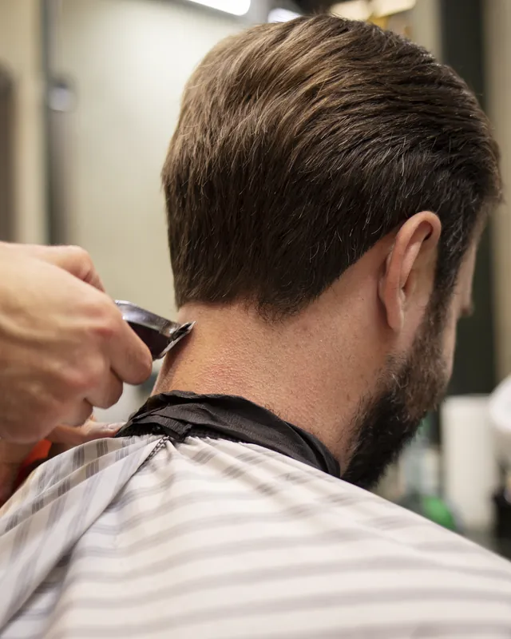

Semplice e automaticosi usa da subito, niente da ricopiare
7 problemi, una soluzionesala, cucina, cassa, magazzino, fornitori, prenotazioni, clienti
Il viaggio di un ordine
Sabato sera, tavolo 4. Una comanda attraversa tutto il locale: nessuno la ricopia, ogni reparto la vede quando serve.
01
La comanda parte dal tavolo
Giulia prende la comanda del tavolo 4 dallo smartphone, anche se il Wi-Fi va e viene.
SalaComandaTavolo 4 · 4 coperti
2×
Spaghetti alle vongole · senza aglio
1×
Branzino al sale
Inviata in cucina
02
La cucina la vede subito
Sullo schermo della cucina compare con la variante in evidenza. Quando è pronta, un tocco.
CucinaIn preparazioneTavolo 4 · 2ª portata
Variante
senza aglio
In coda da
14 minuti
Segnata pronta
03
Il conto si compone da solo
Ogni comanda finisce nel conto del tavolo: alla cassa si sceglie contanti o carta e parte lo scontrino.
CassaScontrinoTavolo 4 · 91,00 €
Coperti
3 adulti, 1 bambino
Pagamento
Carta
Scontrino n. 0038
04
Il magazzino si scarica da solo
Dalla ricetta: per due spaghetti alle vongole escono 240 g di vongole e 200 g di spaghetti.
MagazzinoScaricoVongole veraci
Prima
3,94 kg
Dopo
3,70 kg
Sotto la soglia di 5 kg
05
L'ordine al fornitore è pronto
Le vongole sono sotto soglia: ANIMA prepara l'ordine con le quantità, da mandare al fornitore.
FornitoriDa ordinareIttica Adriatica
Vongole veraci
6 kg
Gamberi rossi
2 kg
Pronto da mandare
06
Le bolle arrivano da sole
Il fornitore manda la bolla per mail: ANIMA la riceve da sola, legge righe e prezzi e segnala cosa è cambiato dall'ultima volta. A te resta solo confermare. Anche le fatture elettroniche si leggono da sole, riga per riga, e ANIMA ti avvisa al mattino di quelle che scadono o sono scadute, finché non le segni come pagate. Se la bolla è di carta, basta una foto.
FornitoriBolla arrivata per mail12 righe lette
Vongole veraci
9,40 €/kg · uguale
Salmone fresco
18,90 €/kg · +8%
Letta da sola · confermi tu
07
Il cliente resta nella sua scheda
Il tavolo era prenotato a nome Bianchi: la visita entra nella sua scheda. Se non torna da un po', finisce fra i clienti da ricontattare.
ClientiScheda clienteMarco Bianchi
Visite
6 quest'anno
Ultima
Sabato, tavolo 4
Da ricontattare se non torna
Non solo ristoranti
ANIMA lavora anche per parrucchieri, barbieri e centri estetici: lo stesso sistema, con calendario, staff e servizi al posto di sala e cucina.
Parrucchieri

Barbieri
Centri estetici
Calendario degli appuntamentiLa giornata e il mese, per ogni persona dello staff.
Staff e serviziChi fa cosa, con la durata di ogni servizio.
Orari e assenzeFerie e permessi di ognuno: gli orari liberi si aggiornano da soli.
Prenotazione onlineI clienti prenotano dal sito, solo negli orari liberi.
StoricoGli appuntamenti passati, mese per mese.
Con SABE, anche al telefonoGli appuntamenti presi da SABE arrivano nel calendario.
I numeri di ANIMA
Precisione, tempo, sprechi, clienti: come cambia il lavoro senza e con un solo sistema. I numeri sono italiani, con la fonte.
Comodità22,3%
dei bar e ristoranti italiani usa un software gestionale
Con ANIMA il locale lavora con precisione, affidabilità ed efficienza.
PrecisioneQuello che si chiede è quello che si fa
Prima: Comande scritte a mano e rilette in cucinaCon ANIMA: Comanda, conto e magazzino dallo stesso ordine
AffidabilitàIl servizio non si ferma
Prima: Se cade internet si torna alla cartaCon ANIMA: Comande anche offline, poi tutto si allinea
EfficienzaMeno passi per ogni ordine
Prima: Il cameriere va e torna dalla cucinaCon ANIMA: La comanda parte dal tavolo
L'occhio che osserva
ANIMA è l'uomo in più del locale: guarda i numeri, non le impressioni. Impara dallo storico del tuo locale (medie, ritmi, stagioni) e ti dice cosa sta cambiando, cosa succederà e dove intervenire. Il video segue un solo dato dentro ANIMA: la bolla DDT 1187 di Ittica Adriatica porta il salmone fresco da 17,50 a 18,90 €/kg (+8%); ANIMA risale alla ricetta della tartare (179 g di salmone), ricalcola il costo del piatto da 4,32 a 4,57 € e il food cost dal 27,0% al 28,6% sul prezzo di 16,00 €; incrocia le vendite (46 tartare a settimana, 11,50 € in più a settimana, circa 50 € al mese); guarda lo storico del salmone (quasi fermo per 7 bolle, poi un salto dell'8%) e propone tre strade già calcolate, consigliando di aspettare la bolla successiva e, se il prezzo resta, portare la tartare a 17,00 €.
Legge la bollaSalmone da 17,50 a 18,90 €/kg: +8%.
Risale alla ricettaLa tartare costa 4,57 €: food cost dal 27,0% al 28,6%.
Incrocia le vendite46 tartare a settimana: 11,50 € in più.
Guarda lo storicoUn salto isolato, non una tendenza.
Ti propone cosa fareAspetta la prossima bolla; se resta, tartare a 17,00 €.
Cosa ti consiglia
Un fattorino in più il sabato a cenaLa zona Centro è la più richiesta il sabato a cena: il 31% delle consegne.Dalle consegne delle ultime 8 settimane
Più fattorini nel weekendIl 41% delle consegne arriva venerdì e sabato sera.Consegne divise per giorno e fascia
Vongole per 2 giorniAl ritmo di consumo di questi giorni la scorta finisce lunedì: l'ordine a Ittica Adriatica è già pronto.Consumo medio dalle ricette dei piatti venduti
Mozzarella scesa del 6%Nell'ultima bolla costa meno: risparmi circa 14 € a settimana sulle pizze.Prezzo confrontato con la bolla precedente
La Margherita tira di più312 vendute negli ultimi 30 giorni, +9% sul mese prima: tienila sempre in evidenza.Classifica dei piatti sul periodo precedente
Stasera circa 2.139 €L'incasso previsto a fine servizio, mentre il servizio è ancora in corso.1.320 € già incassati + 18 coperti prenotati × 45,50 € di scontrino medio
Quattro app, un solo sistema
Chi lavora nel locale usa la sua app, i clienti la loro: quello che fa uno lo vedono subito gli altri. Gestore: il locale dal telefono, con incassi, prenotazioni, magazzino, clienti, cucina e consegne. Cameriere: comande dal tavolo, anche offline, con varianti e coperti; si apre da un QR e si aggiunge alla schermata Home. Fattorino: le consegne in ordine, con indirizzo sulla mappa e i dettagli dell'ordine. Cliente: asporto e domicilio dal sito o dal link del locale, con orario scelto e allergeni.
Il cliente ordina dal link del locale e il gestore lo vede subito; il cameriere manda la comanda anche senza rete; il fattorino consegna e il locale lo sa. Quattro app, un solo sistema.
Reparto per reparto
Apri un reparto per vedere cosa fa ANIMA lì dentro e con quali reparti si collega.
SalaComande dal tavolo, anche offline
9 / 14tavoli occupati
Comande dallo smartphone dei camerieri, con varianti e note
Funziona anche se cade la connessione
Planimetria della sala disegnata da te
Tavoli assegnati in automatico e tavolate per i gruppi
Coperto adulti e bambini
Alla carta e all you can eat
Si collega a Cucina · Cassa · Clienti
CucinaLe comande arrivano subito
7comande in coda
Schermo in cucina, diviso per tavoli, asporto e domicilio
Varianti e note in evidenza
Un tocco per segnare pronto
Metà e metà, aggiunte e combo guidate dal menu
Gli ordini al telefono arrivano da SABE, nello stesso flusso
Si collega a Sala · Magazzino · Prenotazioni
Cassa e scontrinoIl conto si compone da solo
1.842 €incassati oggi
Il conto del tavolo si forma dalle comande
Contanti o carta, e lo scontrino parte
PIN di cassa e turni del personale
Incassi del giorno sempre aggiornati
Il coperto entra nel conto da solo
Si collega a Sala · Magazzino · Report
Magazzino e ricetteSi scarica dalle ricette
3articoli sotto soglia
Ogni piatto venduto scarica i suoi ingredienti
Giacenze e soglie, con gli articoli da riordinare
Per quanti giorni basta ogni scorta, al ritmo di consumo
Inventari veloci, anche dal telefono
Food cost di ogni piatto, dalle ricette
Report di vendite e margini
Si collega a Cucina · Fornitori · Cassa
FornitoriLe bolle arrivano da sole per mail
2ordini pronti
Le bolle arrivano per mail e ANIMA legge righe, quantità e prezzi (quelle di carta con una foto)
Fatture elettroniche lette riga per riga, con il promemoria di quelle da pagare
Prezzi confrontati con la bolla precedente
Ordini pronti con le quantità giuste
Magazzino e costi si aggiornano da soli
Lo storico degli acquisti di ogni fornitore
Si collega a Magazzino · Report
PrenotazioniPranzo, cena, asporto e domicilio
12prenotazioni stasera
Calendario della giornata e del mese
Ordini online con orario scelto e allergeni
Zona di consegna riconosciuta dall'indirizzo
No-show segnato in automatico, con le statistiche
Notifica al gestore per prenotazioni e ordini dei clienti
Con SABE, anche le prenotazioni al telefono
Si collega a Sala · Cucina · Clienti
Clienti e recensioniChi torna e chi no
4da ricontattare
La scheda di ogni cliente, con le sue visite
Quante volte è venuto e quando l'ultima
La lista di chi ricontattare
Le recensioni accanto ai clienti
Con SABE, chi richiama viene riconosciuto
Si collega a Prenotazioni · Sala
ANIMA lavora con SABE e ATLAS
ANIMA è il centro del locale: SABE ci scrive dal telefono, con ATLAS lo interroghi a voce dal Mac.
Con SABE anche il telefono scrive in ANIMA
Prenotazioni e ordini presi al telefono arrivano in ANIMA da soli, a qualsiasi ora, senza ricopiare niente.
Dal Mac: chi viene stasera, i coperti del mese, cosa manca in magazzino, gli ordini ai fornitori su WhatsApp, la prenotazione da spostare. Sempre con conferma.
Ci dai il locale come lo hai, al resto pensiamo noi.
01Ci racconti il localeMenu, ricette, sala e magazzino: ce li dai come li hai, anche in un file, e li impostiamo noi.
02Configuriamo ANIMA e le appPlanimetria della sala, schermo della cucina, app per camerieri e fattorini, ordini online.
03Lo provi primaUn servizio di prova con il tuo menu, prima di accenderlo.
Domande frequenti
Funziona senza internet?
Sì. L'app dei camerieri e il pannello continuano a lavorare anche se cade la connessione: le comande partono e il servizio va avanti, poi tutto si allinea da solo quando la rete torna.
Come entrano menu e ricette?
Ce li dai come li hai, anche in un file: li impostiamo noi. Le ricette servono al magazzino per scaricarsi da solo e al food cost di ogni piatto.
Su cosa funziona?
Dal computer il pannello, dal telefono le app di gestore, camerieri e fattorini, in cucina uno schermo o un tablet. I clienti ordinano dal sito o dal link del locale, senza scaricare niente.
Come si fa lo scontrino?
Dalla cassa di ANIMA: il conto si compone dalle comande, scegli contanti o carta e lo scontrino parte.
Serve anche SABE?
No: ANIMA funziona da solo con il piano Start. Con SABE, nei piani Light e Pro, anche il telefono scrive in ANIMA: prenotazioni e ordini arrivano senza ricopiare niente.
Funziona con ATLAS?
Sì: con ATLAS sul Mac chiedi a voce prenotazioni, coperti e cosa manca, sposti una prenotazione o mandi gli ordini ai fornitori, sempre con conferma.
Posso cambiare tutto da solo?
Sì: menu, prezzi, sala, orari e regole si cambiano dal pannello quando vuoi, e le app si aggiornano da sole.
Cosa comprende Start?
ANIMA completo: gestionale, calendario e cucina, con le app per gestore, camerieri, fattorini e clienti. Senza l'agente vocale SABE.